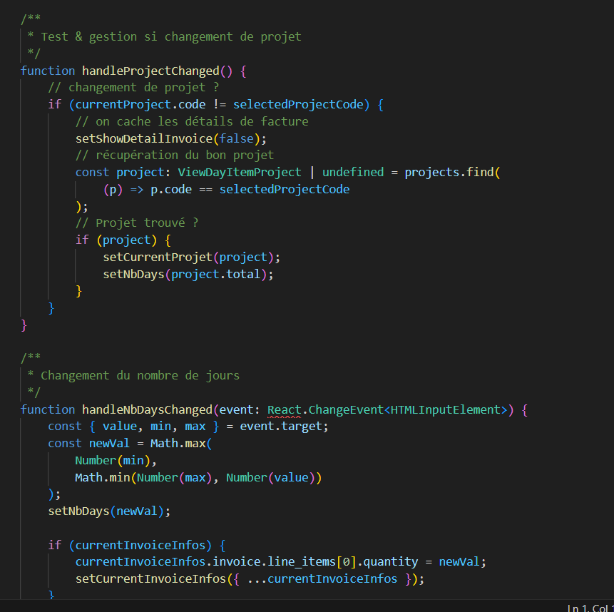
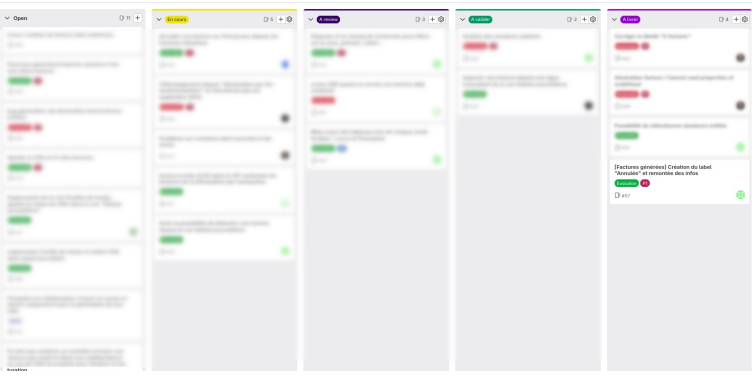

Lors de ce second stage, j'ai travaillé auprès d'une équipe interne sur un outil web de l'entreprise. Cet outil a pour objectif de faire la liaison entre un site de gestion des ressources humaines et un site bancaire, plus précisément sur la gestion de la facturation client. J'ai utilisé des API, travaillé sur le front-end, le back-end, le réseau et découvert des technologies inédites. Un ensemble de tickets m'a permis de participer à un véritable projet d'entreprise de grande envergure. À la fin de ce stage, j'ai également eu l'opportunité de participer au lancement d'une refonte de ce site, qui est reparti de zéro. J'ai ainsi découvert comment organiser l'architecture d'un site web et exploré divers frameworks.
Mes différentes missions :
Correction de bugs : Le site rencontrait divers problèmes plus ou moins critiques et j'ai pu corriger ces problèmes. Par exemple : le système de rafraîchissement via jeton JWT était défectueux, ce qui forçait certaines manipulations pour rester connecté à l'application ; des problématiques liées à l'exportation de certains PDF ; certaines facturations non prises en compte en fonction de certaines dates, etc.
Ajout de fonctionnalités : filtres, nouvelles pages fonctionnelles, etc.
Accompagnement professionnel des clients : Durant mon stage, j'ai eu l'occasion d'accompagner mon tuteur lors de séances d'accompagnement au développement d'entreprise. Certaines entreprises demandaient des conseils ainsi qu'une présence lors d'ateliers pour poser des questions et obtenir de l'aide.
Compétences acquises :
Recenser et identifier les ressources numériques : Durant le stage, j’ai été amené à analyser et décrire les ressources utilisées (outils logiciels, matériel, etc.) dans le rapport de stage, et ainsi apprendre à maîtriser mon environnement de développement. J'ai travaillé sur plusieurs systèmes d'exploitation ainsi que deux frameworks JavaScript différents : ReactJS et NuxtJS.
Exploiter des référentiels, normes et standards adoptés par le prestataire informatique : Ce projet nous a conduit à appliquer des normes de codage rigoureuses. Le respect des conventions de nommage, la séparation des fonctionnalités par classes et fonctions, ainsi que la documentation du code. Tout cela est essentiel pour garantir une qualité et une maintenabilité optimales.

Planifier les activités : L’utilisation des fonctionnalités de planification sur GitLab nous a permis de répartir les tâches au sein de l’équipe et d’anticiper les différentes étapes du projet.
Évaluer les indicateurs de suivi d’un projet et analyser les écarts : GitLab a également servi à suivre l’avancement de chaque tâche. Nous avons ainsi pu ajuster notre planification en fonction des écarts constatés entre les prévisions et la réalité.

Mettre en place son environnement d’apprentissage personnel : Une partie significative du stage a nécessité une autoformation sur les frameworks ReactJS et NuxtJS, non abordés en cours, excepté une introduction à ReactJS. Pour cela, j'ai suivi une formation vidéo en ligne (Udemy). J'ai également eu l'occasion de découvrir et travailler sur plusieurs concepts nouveaux comme Docker, la CI/CD, etc.